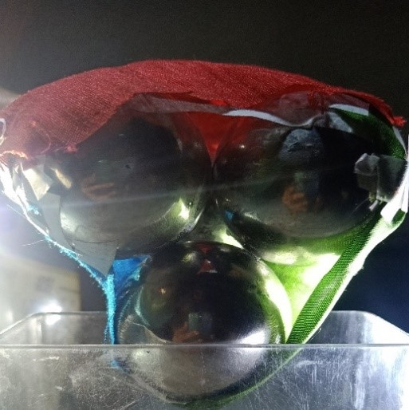
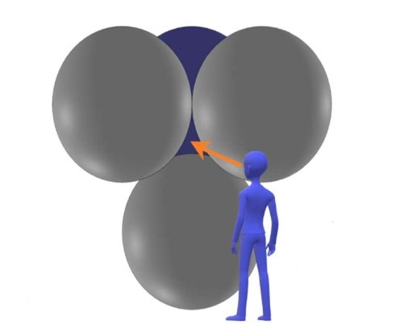
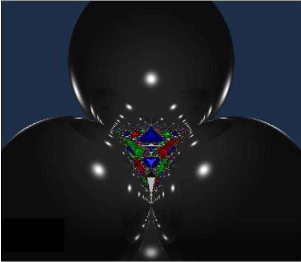
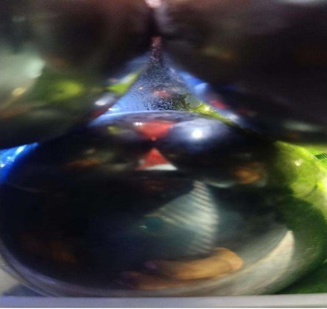
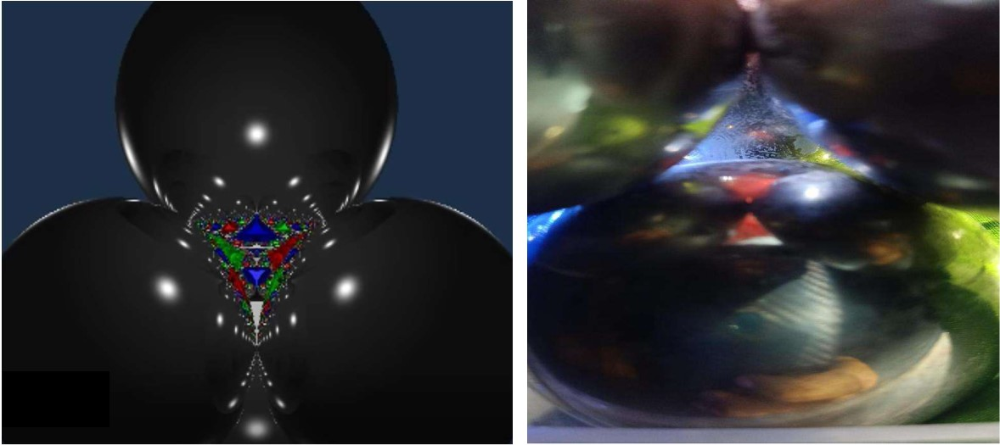
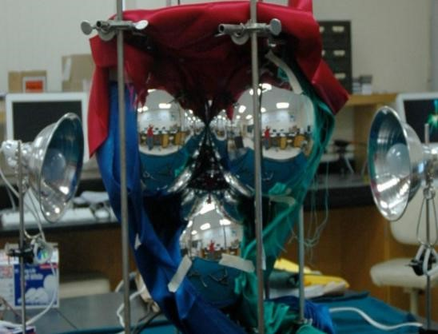
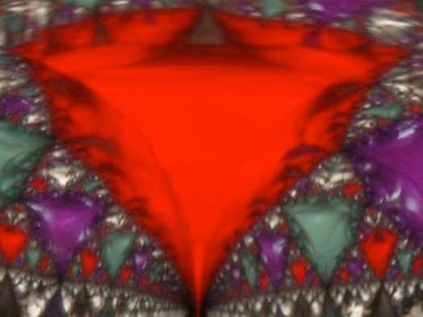
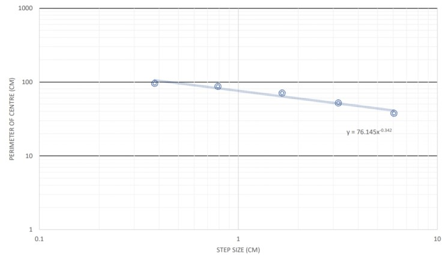
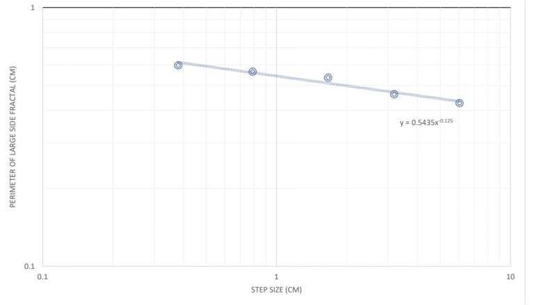

What is our Aim?
- Analyzing Fractals.
- To calculate the Fractal Dimensions of portion of an image formed by chaotic light scattering. (About Fractals)
- Fractal is a curve or geometrical figure, each part of which has the same statistical character as the whole.
- Fractals are common in nature and are found nearly everywhere. An example is broccoli. Every branch of broccoli looks just like its parent stalk. The surface of the lining of your lungs has a fractal pattern that allows for more oxygen to be absorbed
- Fractals help us study and understand important scientific concepts, such as the way bacteria grow, patterns in freezing water (snowflakes) and brain waves, for example. Wireless cell phone antennas use a fractal pattern to pick up the signals better, and pick up a wider range of signals, rather than a simple antenna as fractal is used in the antenna to increase its length while minimizing the size of antenna as like the von Koch fractal which have infinite length but fixed area.
- Fractal dimension D is a statistical quantity that gives an indication of how completely a fractal appears to fill space, as one zooms down to finer and finer scales.
What we planned on doing?
Initially, we had trying figuring out some of the materials from our daily life in which we can easily see some fractals and analyze its fractal dimensions. We have constructed or arranged a setup through which we tried looking at the fractals being generated within the setup.
What steps we followed?
- We bought some spherical steel balls (highly reflecting), Light sources, three different coloured clothes(Red, Green and Blue).
- We, then arranged the balls in Tetrahedral shape.
- Sides were covered , with one left uncovered for capturing the images
- Lights were allowed to fall on the the three clothes from three different sides.
- With proper arrangement we finally captured few images, in which we have to visualize the formed fractals near the void (Figure-1). 
- We were willing to see something as in Figure-2 but we got the observation as in Figure-3   
What were the Limitations?
- Lack of proper setup . (ideal setup) 
- Proper arrangement of Light sources.
- Glue, used to stick them sometimes makes the surface of balls rough. Also the balls were not that much reflective.
How we worked around it?
- Since we were unable to get the fractal images due to limitations in experimental setup we took the images of fractals occurring in figure 2 from mills web article and analyzed those images by ourselves to find the fractal dimensions of the fractals appearing in the image.
- We took the color printout of the Fractal images and estimated the perimeter of the image with the help of divider compass by taking an initial step size and then decreasing step sizes to get more accurate perimeter.
- We plotted the data points in log-log graph of step-size vs perimeter of fractal in Matlab and the data was fit to a power law p=cs1-D, where D is the dimension..
- In the image we got 4 fractals(Red diamond in centre and 3 surrounding it as shown in Figure-4 ) but due to symmetry we only needed to calculate the fractal dimension of the centre red diamond and one side triangle as all the 3 side triangles were similar due to symmetry. 
What we Accomplished?
- The center red diamond of the image has a fractal dimension of 1.34 ± 0.04. This was found by plotting the step size in centimeters versus the perimeter of the object in centimeters on a log-log scale. The data were then fit to a power law. The power is 1 − D, where D is the fractal dimension.(matlab-plot).
This means that it has more dimension than a line, but less than a surface, Which means it is too complex to be called as a line but also too simple to be called as a surface.

- The side fractals of the image have a fractal dimension of 1.12±0.06.(matlab-plot),this dimension is less than the dimension of the center , which means centre is more fully filled than the side. 
- We found that dimensions don't always have to be integers , they can be non-integer too
What do we plan to achieve?
- Performing this experiment with better instruments to get better fractal images.
- Since we got a good exposure about what is fractals now we can observe fractals in our daily life that we generally ignore like broccolli, snowflakes etc